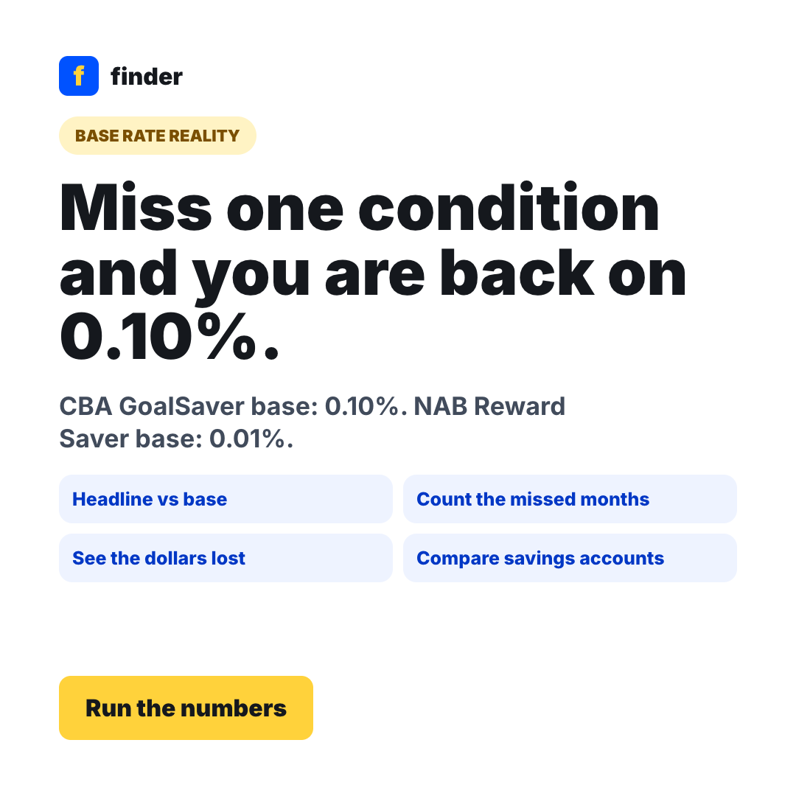
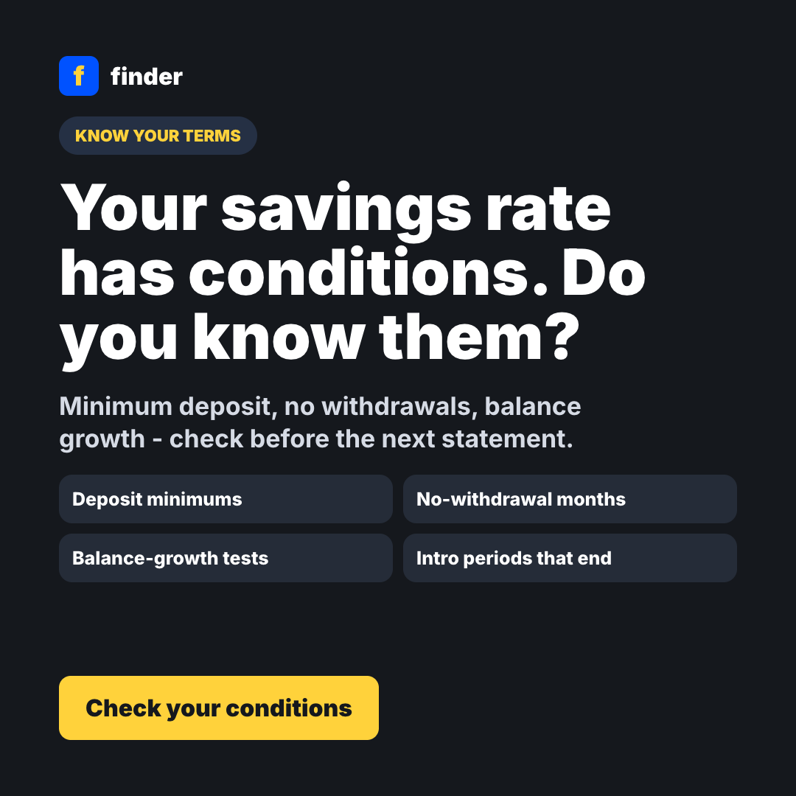

Separate the two rates
Ask for the headline bonus rate and the base rate that applies when a condition is missed.
All four majors reprice on 9 October 2026
Every major bank is passing the full +0.25% through to variable home loans from 9 October. On the savings side, most of the increase lands in the bonus rate - the part you only get if you hit every condition that month. CBA's GoalSaver base rate is 0.10%. NAB's Reward Saver base rate is 0.01%. This flow turns that asymmetry into a dollar figure.
Make the gap between the advertised rate and the earned rate concrete, then route savers to a better account or to the conditions they are quietly failing.
Ask for the headline bonus rate and the base rate that applies when a condition is missed.
Most savers cannot name their conditions, let alone how often they broke them. Make them count.
Big gap and frequent misses means switch. Big gap and rare misses means fix the conditions.
Over the last 12 months
$356lost to missed bonus conditions
Three missed months is a third of your bonus gone. Worth checking whether the conditions or the account is the problem.
Simple interest, no compounding, balance held flat. Indicative only - your account's terms decide what actually gets paid.
Tick every condition your account puts on the bonus rate. One missed tick in a month is usually enough to drop the whole month to the base rate.
Tick the conditions that apply to your account.
Square social variants for Meta, Instagram and partner/creator read-outs.

